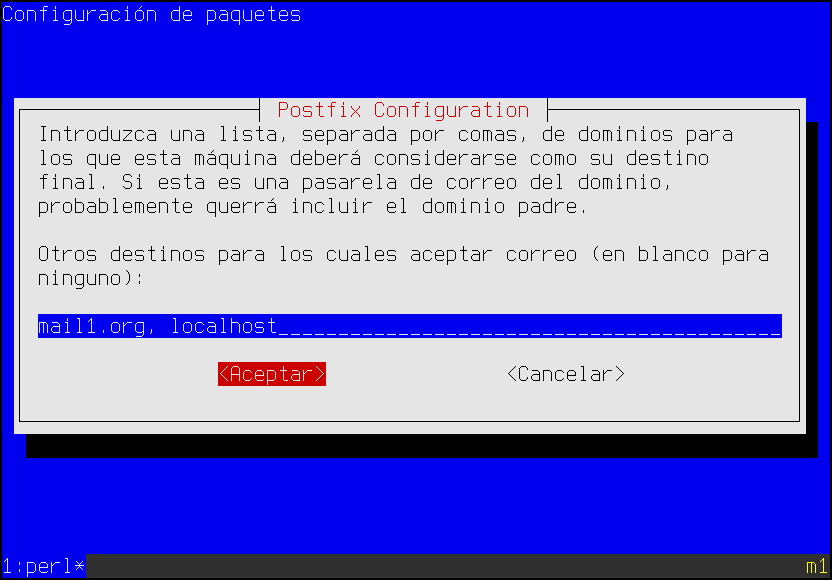
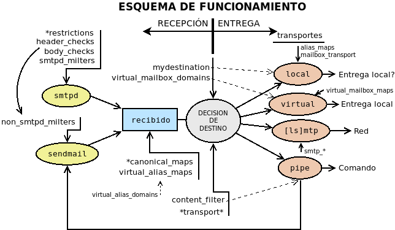

7.3.3.1. Instalación y configuración¶
7.3.3.1.1. Preliminares¶
Antes de proceder a la instalación de cualquier servidor SMTP es necesario que la máquina en la que se instale sea identificada como tal por el DNS. En nuestro caso, necesitamos un sistema de resolución de nombres que propicie que en las máquinas que formarán parte de nuestras pruebas (tanto servidores como clientes), ocurra esto para el dominio de pruebas (p.e. mail1.org):
$ host mail1.org
mail1.org mail is handled by 1 mail.mail1.org.
$ host smtp.mail1.org
smtp.mail1.org is an alias for mail.mail1.org.
mail.mail1.org has address 192.168.255.1
$ host imap.mail1.org
imap.mail1.org is an alias for mail.mail1.org.
mail.mail1.org has address 192.168.255.1
Ahora bien, un servidor de correo se utiliza para enviar mensaje a otros servidores de correo y es obvio que si montamos uno en una máquina virtual con un dominio inventado o que no nos pertenece, ningún servidor de correo serio en internet, aceptará nuestros mensajes. Eso obliga a que tengamos que montar un segundo servidor a fin de que puedan intercambiarse los mensajes entre sí. Por tanto, requeriremos una segunda máquina que gestione el correo de un segundo dominio (p.e. mail2.org) y que el servicio DNS también defina el registro MX para este segundo dominio:
$ host mail2.org
mail2.org mail is handled by 1 mail.mail2.org.
$ host smtp.mail2.org
smtp.mail2.org is an alias for mail.mail2.org.
mail.mail2.org has address 192.168.255.129
$ host imap.mail1.org
imap.mail2.org is an alias for mail.mail2.org.
mail.mail2.org has address 192.168.255.129
Para resolver esto, podemos optar por la solución que deseemos. Posiblemente la más rápida y sencilla sea instalar un servidor DNS en la primera de las máquinas que resuelve ambas dominios. Por otra parte, el fichero de definición de zona tendrá que tener al menos los siguientes registros (aparte del registro SOA):
@ IN NS ns
IN MX 10 mail
ns IN A 192.168.255.1
mail IN A 192.168.255.1
smtp IN CNAME mail
imap IN CNAME imap
Además, conviene que el dominio de los servidores que obtenemos con dnsdomain o hostname sea coherente[1]:
$ dnsdomain
mail1.org
$ hostname -d
mail1.org
y lo mismo debería ocurrir en el otro servidor (mail2.org).
Nota
La definición de la máquina que se encarga de gestionar el correo del dominio, que es lo visto más arriba, es lo mínimo indispensable para que funcione nuestro servidor. Ahora bien, si el servidor se coloca en internet, son recomendables algunos otros registros que se presentan como consejos más adelante.
Consejos
Para montar la práctica puede usarse:
- Una primera máquina virtual con dos interfaces de red, una en la red real y otra en una red interna (192.168.255.0/24). En la red interna puede tener dirección 192.168.225.1/24.
- Esta primera máquina contendrá el servidor de correo del dominio mal1.org y el servidor DNS encargado de gestionar los dominios mail1.org y mail2.org. El primer domimio podemos asociarlo a 192.168.255.0/25 y el segundo a 192.168.255.128/25.
- Una segunda máquina virtual con una interfaz de red en la misma red interna que la máquina anterior y dirección 192.168.255.129/24. En ella se alojará el servidor de correo del dominio mail2.org.
Nota
Si se usa bind para configurar el servidor DNS puede ser bastante más laborioso usar subredes. En ese caso, podríamos hacer que la red interna sea 192.168.254.0/23 y los dos dominios estén asociados a las redes 192.168.254.0/24 y 192.168.255.0/24, respectivamente.
7.3.3.1.2. Instalación¶
Dado que trataremos postfix, instalar[2] consiste en:
# apt-get install postfix
La instalación, nos invita a realizar una configuración previa del servidor mediante menús de whiptail. Sin embargo, es mejor elegir la opción de dejar sin configurar el paquete y, acabada, arrancar nosotros a mano esta configuración[3]:
# rm -f /etc/aliases
# dpkg-reconfigure postfix
que nos planteará la siguientes preguntas:
Tipo de servidor:

La respuesta determina cómo funcionará el servidor:
Sitio de internet: es la opción que debemos elegir, ya que hace que nuestro servidor se comporte como un servidor de correo que se comunica con el resto de servidores de correo de la forma en que hemos ya descrito.
Internet con smarthost: en este caso, el servidor se oonfigura como cliente de otro servidor de correo, de manera que se le facilita un usuario y contraseña para que se valide en ese otro servidor y envío los mensajes haciendo uso de él.
Sistema satélite: es un servidor de correo adicional que recibe mensajes y los envía al servidor que realmente almacena los mensajes. Si para el dominio hubiera varios servidores de correo alternativos:
$ host mail1.org mail1.org mail is handled by 1 mail.mail1.org. mail1.org mail is handled by 10 otromail.mail1.org.
Los servidores con menos prioridad (otromail.mail1.org en el ejemplo) deberían ser configurados como sistemas satélite.
Sólo correo local: el servidor no necesita conexión de red y se limita a entregar correo local en la propia máquina. Es la configuración que debe utilizarse cuando no se quiere mnontar un servidor de correo, sino permitir a las apliaciones que usan el correo como método de comunicación con el administrador, efectuar sus comunicacnoes.
Nombre del sistema de correo:
En este campo introducimos el nombre del dominio que gestionamos, que pasará a constituir el contenido del fichero
/etc/mailname.Usuario receptor de los mensajes de administración:
El administrador (las cuentas root y postmaster) no recibe mensajes de correo, sino que estos son derivados a otro usuario sin permisos de administrador. Este cuadro de diálogo pide el nombre de tal usuario para incluirlo como destinatario dentro de
/etc/aliases, de modo que su contenido quedará así:postmaster: root root: usuario
En realidad, como su nombre indica, este fichero es un fichero de alias y podemos modificarlo o añadir más entradas posteriormente:
# echo 'mailadmin: root' >> /etc/aliases # newaliases # Obligatorio regenerar aliases.db después de su modificación
Ver también
Se ofrece algo más de información sobre este fichero algo más adelante.
Dominios del servidor:
Deben indicarse, separados por comas, los dominios que el servidor de correo considera que gestiona él. Dicho de otra forma, si un mensaje de correo esta destinado a una cuenta de las incluidas en la lista, el servidor se quedará con él, mientras que, si no es así, buscará qué servidor gestiona el correo de ese dominio para pasárselo. En este caso, basta con indicar el dominio (mail1.org) y también localhost para que programas como cron sean capaces de comunicarse con el administrador.
Actualizaciones síncronas:
Redes locales:
El cuadro de diálogo permite establecer cuáles son las redes que el servidor definirá como locales. Tiene importancia porque éste permite tratarlas de distintos modo y, por ejemplo, no exigir la validación del cliente que lo usa. Por lo general, se fija como red local la de loopback; así los programas locales que deseen enviar correo lo hará sin problema. Eliminamos las redes IPv6, porque más adelante configuraremos para sólo usar IPv4.
Límite del buzón de correo para cada usuario:
Carácter para definir extensiones de correo local:
Esto significa que para el nombre de cuenta se ignorarán todos los caracteres despúes de un signo «+», de modo que un mensaje a la cuenta manolo+esto.no.sirve@mail1.org, se entregará a manolo.
Protocolo soportado:
La configuración principal de postfix se guarda en
/etc/postfix/main.cf, por lo que este proceso equivale a añadir las
siguientes líneas a tal fichero[4]:
smtpd_relay_restrictions = permit_mynetworks permit_sasl_authenticated defer_unauth_destination
myhostname = m1.mail1.org
alias_maps = hash:/etc/aliases
alias_database = hash:/etc/aliases
myorigin = /etc/mailname
mydestination = mail1.org, localhost
relayhost =
mynetworks = 127.0.0.0/8
mailbox_size_limit = 0
recipient_delimiter = +
inet_interfaces = all
inet_protocols = ipv4
Nota
No es necesario, en este caso, recargar la configuración, porque dpkg-recofigure se encarga de ello.
Conviene modificar el nombre de la máquina expresado en la configuración (la línea resaltada) a smtp.mail1.org, de modo que podemos editar el fichero o bien:
# postconf -e 'myhostname = smtp.mail1.org'
# invoke-rc.d postfix reload # Obviamente, esto también si se edita.
7.3.3.1.3. Cifrado¶
El protocolo SMTP es bastante antiguo (el RFC 821 data de 1982) así que es absolutamente inseguro. Para asegurarlo se utiliza TLS mediante dos técnicas:
- Envolverlo, de manera que antes de cualquier comunicación SMTP se establece el canal seguro, como se hace con otros protocolos como HTTPs. Es la técnica que se usa al escuchar en el puerto 465.
- Negociar si hay cifrado o no al comienzo de la comunicación SMTP (STARTTLS), que es lo recomendado y lo que se usa tanto el el puerto 25 como en el 587.
Para la segunda técnica, la directiva encargada de activar el cifrado es smtpd_tls_security_level, cuyo valor predeterminado es may, que anuncia la posibilidad de cifrado al cliente y deja a este la decisión de cifrar o no. La primera técnica, en cambio, exige:
smtpd_tls_wrappermode = yes
que inhabilita cualquier valor que se haya indicado en smtpd_tls_security_level.
Advertencia
No use esta configuración, salvo para escuchar en el puerto 465, ya que esta técnica no es la que usan los servidores de correo para intercambiar sus mensajes.
Otro aspecto importantísimo del cifrado es preparar las clave pública y privado para llevar a cabo el cifrado. Si se echa un vistazo a la configuración de postfix, se comprobará que el fichero ya trae definidas unas claves pública y privada:
$ egrep '(cert|key)_file' /etc/postfix/main.cf
smtpd_tls_cert_file=/etc/ssl/certs/ssl-cert-snakeoil.pem
smtpd_tls_key_file=/etc/ssl/private/ssl-cert-snakeoil.key
Y, además, la instalación de postfix, instala a su vez ssl-cert que genera ese par de claves. Si se revisa el epígrafe dedicado a la generación del par de claves autofirmadas[5], se sabrá que este par de claves se generan con el nombre cualificado de la máquina. Como es conveniente que el par de claves sirva para cuando el cliente se conecta a través de los nombres smtp.mail1.org o imap.mail1.org, es mejor regenerar el par de claves haciendo que se haga referencia a *.mail1.org, tal como se aconseja en el epígrafe señalado. Por tanto:
# /usr/sbin/make-ssl-cert /usr/share/ssl-cert/ssleay.cnf keycert.pem
# sed '1,/-END PRIVATE KEY-/d' keycert.pem > /etc/ssl/certs/ssl-cert-snakeoil.pem
# sed '/-END PRIVATE KEY-/q' keycert.pem > /etc/ssl/private/ssl-cert-snakeoil.key
Nota
Por supuesto, en un servidor real en producción debemos disponer de un certificado acreditado por Let’s Encrypt.
Por último, añadiremos algunos parámetros de TLS[6] a
/etc/postfix/main.cf:
# TLS
smtpd_tls_loglevel = 1
smtpd_tls_received_header = yes
smtp_use_tls = yes
7.3.3.1.4. Autenticación¶
La autenticación se logra en postfix mediante SASL. Ahora bien, postfix en sí no lo implementa, por lo que requiere el uso de software externo. En sus versiones modernas soporta dos:
$ postconf -a
cyrus
dovecot
o sea, Cyrus SASL o Dovecot SASL, aunque la predeterminada, y la única que se soportaba en versiones antiguas, es:
$ postconf -d smtpd_sasl_type
smtpd_sasl_type = cyrus
Nota
Se aconseja autenticar con Dovecot SASL en caso de que acabe instalando de todas formas dovecot como servidor IMAP.
7.3.3.1.4.1. Cyrus SASL¶
Usa el servicio smtp de PAM. La instalación del paquete puede llevarse a cabo del siguiente modo:
# apt-get install sasl2-bin
y configurarlo a través del fichero /etc/default/saslauthd, lo cual
exige modificar dos líneas:
START=yes
y una al final del fichero, ya que postfix en debian se ejecuta enjaulado:
OPTIONS="-c -m /var/spool/postfix/var/run/saslauthd"
Hay, además, que configurar postfix para que lo use, por lo que
habrá que crear el fichero /etc/postfix/sasl/smtpd.conf:
$ cat > /etc/postfix/sasl/smtpd.conf
pwcheck_method: saslauthd
mech_list: PLAIN LOGIN
y modificar /etc/postfix/main.cf para añadir soporte para sasl:
# Autenticación con SASL
smtpd_sasl_auth_enable = yes
smtpd_sasl_path = smtpd
smtpd_sasl_local_domain =
smtpd_sasl_security_options = noanonymous
broken_sasl_auth_clients = yes
Nota
Un valor en smtpd_sasl_local_domain provoca que al nombre de
usuario se añada el dominio expresado. Por ejemplo:
smtpd_sasl_local_domain = $mydomain
provocaría que el usuario identificado como «pepe» sea reconocido como el usuario «pepe@mail1.org». ¡Ojo! Hablamos de usuario y no de cuenta. La cuenta que posee este usuario (se reconozca como pepe o pepe@mail1.org) es pepe@mail1.org).
Además, es conveniente modificar nuestra política de aceptación de mensajes para hacer el servidor más seguro frente al spam:
# Políticas de recepción de mensajes
smtpd_recipient_restrictions = permit_mynetworks,
permit_sasl_authenticated,
reject_unauth_destination,
reject_unknown_client_hostname,
reject_rbl_client zen.spamhaus.org
la cual actúa de esta forma:
- Aceptaremos recibir mensajes que sean enviados desde nuestras redes (en nuestra configuracióon, sólo la propia máquina en la que está el servidor).
- En caso contrario, aceptaremos recibir mensaje de conexiones autenticadas.
- En caso contrario, rechazaremos los correos que no vayan destinados a nosotros mismos (o que no vayan destinados a dominios que hayamos autorizado, pero no hemos autorizado ninguno).
- En caso contrario, rechazaremos mensajes de clientes cuya IP no se resuelva a un nombre.
- En caso contrario, comprobamos que el cliente nos parezca fiable, para lo cual nos basamos en una base de datos externa.
Ver también
Para profundizar en la política de aceptación de mensajes, consulte más adelante.
El último paso es añadir el usuario postfix al grupo sasl y reiniciar los servicios:
# adduser postfix sasl
# invoke-rc.d postfix restart
# invoke-rc.d saslauthd restart
Con esta configuración, ya tenemos dispuesto un MTA que escucha exclusivamente en el puerto 25 y permite a través de él la conexión de un MSA para que, autenticándose, envíe mensajes a cuentas del propio servidor o a cuentas ajenas; o bien, la conexión de otro MTA para que le entregue mensajes para sus propias cuentas. Esta configuración es ya absolutamente funcional, pero mas adelante se tratará cómo habilitar la escucha en los puertos 25, 465 y 587, según se describió al tratar el protocolo.
7.3.3.1.4.2. Dovecot SASL¶
La alternativa al método anterior es usar dovecot. En puridad basta con instalar el paquete dovecot-core, aunque si pretendemos proporcionar también un servidor IMAP es mejor, directamente:
# apt-get install dovecot-imapd
Después basta con seguir las instrucciones referidas en este epígrafe de la sección sobre IMAP y, finalmente, establecer las política de aceptación de mensajes del epígrafe anterior.
Nota
La ventaja no es solamente la de no instalar software extra, sino también el hecho de que los usuarios exclusivos que habilitemos en dovecot, también los reconocerá postfix. Ahora bien, si añadimos usuarios exclusivos, nos veremos obligados a usar dovecot para la entrega.
7.3.3.1.4.3. Comprobaciones¶
Para comprobar que haya ido bien, la configuración anterior lo más directo es emular lo que haría un cliente que se conecta al puerto 25. Podríamos usar telnet lo que equivaldría a una conexión no segura, pero utilizaremos, en cambio, openssl para la conexión, ya que nos permite a la vez probar que marcha bien el cifrado. La conexión manual, sin embargo, requiere primero saber cómo transmitir nuestra identidad al servidor[7]:
$ printf 'usuario\0usuario\0password' | base64
dXN1YXJpbwB1c3VhcmlvAHBhc3N3b3Jk
$ openssl s_client -connect localhost:smtp -starttls smtp -quiet
depth=0 CN = mail.mail1.org
verify error:num=18:self signed certificate
verify return:1
depth=0 CN = mail.mail1.org
verify return:1
250 SMTPUTF8
EHLO soy.yo
250-m1.mail1.org
250-PIPELINING
250-SIZE 10240000
250-VRFY
250-ETRN
250-STARTTLS
250-AUTH PLAIN LOGIN
250-AUTH=PLAIN LOGIN
250-ENHANCEDSTATUSCODES
250-8BITMIME
250-DSN
250 SMTPUTF8
AUTH PLAIN dXN1YXJpbwB1c3VhcmlvAHBhc3N3b3Jk
235 2.7.0 Authentication successful
QUIT
221 2.0.0 Bye
El último paso de la comprobación sería enviar un mensaje a través de este servidor al otro después de haberlo configurado también. La forma más sencilla es usar el ejecutable sendmail y comprobar que el mensaje se envía y, en el otro servidor se aloja en el buzón de usuario:
$ /usr/sbin/sendmail -t
From: usuario@mail1.org
To: usuario@mail2.org
Subject: Prueba de envio...
s/t
Nota
La prueba de que nuestro intento ha obtenido buen suceso es comprobar
los registros de ambos servidores y consultar el buzón del usuario del
segundo servidor que, por ahora, se encuentra en /var/mail/usuario.
Para esta comprobación, no obstante, no se usa la autenticación, ya que hemos configurado el servidor para que no sea necesaria ésta, si la conexión es local, como es el caso. Si quisiéramos enviar un mensaje, autenticándonos, además, podríamos instalar msmtp, que es un pequeño MSA:
# apt-get install msmtp
y crear para el usuario emisor del mensaje el fichero ~/.msmtprc[8]:
# Valores comunes a todas las cuentas.
defaults
logfile ~/.msmtp.log
syslog on
tls on
# Como es autofirmado, deshabilitamos la comprobación del certificado
tls_certcheck off
from usuario@mail1.org
host smtp.mail1.org
user usuario
# No la indicamos y nos la pedirá interactivamente
#password usuario
maildomain mail1.org
# Acceso por el puerto 25 (el único por ahora)
account vm25
# Habilitamos autenticación con contraseña
auth plain
# Cifrada, pero con negociación
tls_starttls on
account default: vm25
Advertencia
Si nuestro anfitrión es un linux, es recomedable que instalemos el
MSA en el propio anfitrión para que simulemos que el cliente que envía
mensajes se encuentra en una máquina que no pertenece a $mynetworks.
Ahora bien, en ese caso msmtp deberá saber cuál es la máquina
smtp.mail1.org, cuya definición la conoce el DNS de la primera máquina
virtual. La solución más sencilla, apra no hacer cambios en la configuración
del anfitrión, es usar directamente la dirección IP en el valor de host.
Hecha la configuración podemos comprobar, las características del servidor[9]:
$ msmtp -a vm25 -S
[... Información del servidor ...]
Y enviar un correo así:
$ msmtp -a vm25 -t
From: usuario@mail1.org
To: usuario@mail2.org
Subject: Prueba de envio de mail1 a mail2
s/t
Nota
Si queremos ver el diálogo SMTP entre el MSA y el MTA podemos
añadir la opción -v.
7.3.3.1.5. Puertos de escucha¶
Aunque el servidor ya es completamente funcional en lo referente al envío y recepción de correo, la intención de este epígrafe es habilitar la escucha en cada uno de los tres puertos dependiendo de cuál sea la intención del emisor:
- 25
- Para recepción de mensajes a nuestras cuentas transmitidos por otro MTA. Deshabilitando la autenticación se logra este propósito, ya que por nuestras políticas de recepción, rechazamos todo mensaje sin autenticación cuyo destino no sea una de nuestras cuentas.
- 465
- Para ique se conecte a él un MSA y, tras autenticación, envíe mensajes usando el protocolo SMTPs.
- 587
- Ídem, pero se usa SMTP seguro con negociación.
Para ellos, sustituiremos el smtpd_recipient_restrictions anterior por lo siguiente:
smtpd_recipient_restrictions = permit_mynetworks,
permit_sasl_authenticated,
reject
port25_recipient_restrictions = permit_mynetworks,
reject_unauth_destination,
reject_unknown_client_hostname,
reject_rbl_client zen.spamhaus.org
Nuestra estrategia en este caso, es aplicar el valor de tal directiva a los
puertos 465 y 587 que son los que destinamos a la conexión de los MSA
y, por tanto, requerirán autenticación. La otra directiva es, en realidad, un
nombre inventado que aplicaremos a la configuración del puerto 25 editando
el fichero /etc/postfix/master.cf:
smtp inet n - y - - smtpd
-o smtpd_sasl_auth_enable=no
-o smtpd_recipient_restrictions=$port25_recipient_restrictions
urd inet n - y - - smtpd
-o smtpd_tls_wrappermode=yes
submission inet n - y - - smtpd
Nota
En el master.cf original sólo la línea del servicio SMTP
está habilitada y sin añadir configuración lo que quiere decir que se tomará
aquella escrita en main.cf.
Nota
urd, y no SMTPs, es el servicio asociado al puerto 465 según
el fichero /etc/services. Esto se debe a que SMTPs se abandonó en
el estándar en favor del uso de STARTTLS, así que tal puerto se asoció
posteriormente a otro servicio distinto.
Como vemos, en el puerto 25, deshabilitamos la autenticación, ya que no es
nuestro propósito que lo usen los MSA, y usamos como restricciones las que
definimos en main.cf anteriormente. En el puerto 465 lo que hacemos
es usar SSL directamente sin negociación previa. Finalmente, en el puerto
587 usamos la configuración tal como está definida en main.cf.
Para probar esta nueva configuración podemos modificar la configuración de msmtp y añadir estas dos entradas:
defaults
# [ ... La configuración anterior ...]
account vm25
# Por el 25, hemos deshabilitado la autenticación
auth off
tls_starttls on
account vm465
port 465
auth on
tls_starttls off
account vm587
port 587
auth on
tls_starttls on
Cada cuenta prueba postfix en uno de los puertos de escucha:
En el 25, si intentamos mandar mensajes autenticándonos nos rechazará (de ahí que hayamos cambiado
auth), pero. deshabilitando la autenticación, si intentamos mandar mensajes al servidor mail2.org, nos rechazará porque el destino no es una cuenta de mail1.org. Si, finalmente, intentamos mandar un correo a postmaster@mail1.org u otra cuenta del propio servidor, nos rechazará a menos que la IP del anfitrión se resuelva a algún nombre (lo cual probablemente no ocurrirá).Advertencia
Si queremos que el segundo servidor pueda entregar mensajes, deberemos asegurarnos que su IP es resoluble, lo que implica que hayamos habilitado la resolución inversa en el DNS.
En el 465 podremos enviar correo perfectamente autenticándonos y la conexión se tunelizará directamente mediante SSL.
En el 587 tampoco habrá problemas y la conexión será segura, pero con negociación previa.
7.3.3.1.6. Configuración¶
Ya se ha dicho que el principal fichero de configuración de postfix
es /etc/postfix/main.cf, de modo que consultando o editando este
fichero, puede revisarse o modificarse la configuración. No obstante, se dispone
de la utilidad postconf, que permite realizar ambas acciones:
Consultar la configuración:
$ postconf -nLa opción
-nprovoca que sólo se muestren las directivas incluidas en el fichero/etc/postfix/main.cf. Si se prescinde de ella, se mostrarán todas, tambíen aquellas que no se relacionan en el fichero y conservan, por tanto, su valor predeterminado.Si se quiere consultar un valor concreto, puede indicarse como argumento la directiva:
$ postconf myhostname m1.mail1.org
Nota
Cuando se consultan valores, puede usarse
-fpara formatear las líneas largas y que resulten legibles.Nota
Es posible, también, incluir varias directivas en sendos parámetros.
Consultar los valores predeterminados:
$ postconf -dComo en el caso anterior, es posible consultar valores concretos:
$ postconf -d myhostnameAñadir o modificar el valor de una directiva[10]:
# postconf -e 'message_size_limit = 20480000'
Nota
Pueden indicarse varias directivas en sendos parámetros.
Comentar una directiva presente en el fichero:
# postfix -# home_mailboxSi se usa la opción
-Xen vez de esta, la directiva desaparece.
7.3.3.1.7. Funcionamiento¶
Las gestiones que realiza postfix desde que recibe un mensaje hasta que se deshace de él son muchas y su documentación oficial ofrece un texto explicatorio. Aquí expondremos un modelo muy, muy simplificado con abundantes omisiones (p.e. ni siquiera aparecen las colas de mensajes), pero que nos servirá para entender por qué funciona toda la configuración propuesta más adelante.
Nota
Este epígrafe sirve de guía para conocer en qué momento se aplican las configuraciones que se ilustrarán a partir de ahora. Una lectura previa puede resultar algo críptica o indigesta, pero puede probar a regrerar aquí mientras lee los contenidos siguiente o a su término: sin duda entederá todo mucho mejor.
- Fase de recepción
- postfix recibe mensajes de correo por diversos medios,
principalmente:
- A través del protocolo SMTP procedente de otros servidores o un cliente de correo (de un MSA, en definitiva).
- A través del ejecutable sendmail instalado en la propia máquina.
- En esta fase de recepción del mensaje, si se recibe a través del protocolo SMTP, actúan diversas restricciones (vea el epígrafe correspondiente) en distintos momentos. También se lleva a cabo una verificación de la cuenta de destino.
- Mientras se reciben los datos del mensaje actúan las comprobaciones de cabeceras (header_checks) y cuerpo (body_checks), que se tratarán donde corresponde `
- Al término del envío de datos pueden establecerse filtros de correo, milters, capaces de manipular el mensaje (añadiendo cabeceras, por ejemplo) o incluso rechazarlo. Para las posibles nuevas acabeceras añadidas existe una ulterior comprobación de cabecera (milter_header_checks).
- postfix recibe mensajes de correo por diversos medios,
principalmente:
- Fase de entrega
Admitido el correo, pueden modificarse los remitentes y destinatarios tanto del sobre como del mensaje a través de directivas *canonical_maps.
Después de ello, pueden aún redirigirse los mensajes a cuentas distintas a las que indica su dirección del sobre, pero sin que se altere ninguna dirección a diferencia de lo que ocurre en el punto anterior. De ello se encarga virtual_alias_maps.
Completado lo anterior, postfix toma la decisión de encaminar el mensaje para lo cual puede usar distintos transportes:
- local
Reservado a aquellas cuentas pertenecientes a usuarios que postfix considera locales. Para definir los dominios asociados a cuentas locales se consulta mydestination y para obtener la relación de usuarios, el valor de la directiva local_recipient_maps. Por defecto, se usa como agente para este transporte el agente indicado con local_transport, que por defecto es el agente de entrega local.
Usando este agente, cualquier mensaje dirigido a cuenta de uno de esos dominios, cuyo usuario no esté referido en esta directiva, se rechazará con un error:
550 5.1.1 <noexiste@dominio_local> User doesn’t exist
Además, la entrega será comúnmente en el buzón local del usuario, pero esto puede cambiar mediante tres directivas:
- alias_maps, que permite redirigir el mensaje incluso a cuentas externas (véase la explicacion sobre tablas aliases).
- mailbox_transport, que permite definir un nuevo transporte para todas las cuentas locales, en vez de hacer la entrega en el buzón del usuario.
- mailbox_transport_maps, para lo mismo que lo anterior pero mediante una tabla que permite definir el transporte para cada cuenta. Las que no se incluyen en la tabla aplicarán, si existe, el transporte de la directiva anterior
- virtual
Reservado para cuentas cuya entrega será local, pero los usuarios virtuales. Pueden definirse los dominios de estos usuarios virtuales con la directiva virtual_mailbox_domains. El agente para este tipo de entrega viene definido por virtual_transport, cuyo valor predeterminado es el agente de entrega virtual.
Con este agente, como la entrega se hace en un buzón local, es necesario definir cuál es el buzón para cada cuenta mediante virtual_mailbox_maps. Si se envía un mensaje a alguna cuenta de los dominios anteriores que no tiene definido buzón mediante esta última directiva, se rechazará el mensaje con un error:
550 5.1.1 <noexiste@dominio_virtual>: Recipient address rejected: User unknown in virtual mailbox table
- pipe
Es un transporte que cede el mensaje mediante una tubería a un programa externo para que este se encargue de su entrega. mlmmj es un ejemplo de programa externo que usa este tipo de transporte para gestionar los mensajes.
También usan este transporte todos los mensajes que tengan definido un filtro a través de la directiva content_filter. Se supone que el filtro realizará las modificaciones oportunas en el mensaje y volverá a inyectarlo en postfix a través de sendmail. Esta segunda vez el sistema considerará el mensaje ya filtrado y usará el transporte que debería haber usado en caso de no haberse definido ningún filtro.
- smtp/lmtp
Son dos transportes que usan servidores SMTP y LMTP respectivamente a lo que ceden los mensajes para su entrega. Lo habitual es que el servidor SMTP sea externo y el servidor LMTP esté en la propia máquina y los entregue en buzones locales. Como postfix tiene definido como valor de default_transport el agente smtp (que es un cliente SMTP/LMTP), cualquier mensaje a cuenta de un dominio que no sea local o virtual usará este agente.
Para alterar los agentes predefinidos de transporte, puede usarse transport_maps, que permite definir para cuentas o dominios indivduales qué transporte se usará. Por ejemplo, si el dominio mail1.org está listado en mydestination debería usar el agente definido en local_transport; pero si le definimos otro agente distinto en transport_maps pasará a usar éste.
Advertencia
Si usa transport_maps tenga presente que la verificación de la existencia de la cuenta se efectúa durante la recepción y, en consecuencia, se verificará la existencia de una cuenta perteneciente a un dominio local (o virtual) antes de que esta directiva provoque que se use otro agente en vez del agente local (o virtual) de transporte.
Ver también
Una lectura muy interesante sobre el funcionamiento de postfix es este artículo de Linux Journal.
Notas al pie
| [1] | Véanse los preliminares de la configuración DNS. |
| [2] | En debian el servidor de correo predeterminado (asociado al paquete default-mta) es exim4 y hasta wheezy o jessie se instalaba con la instalación mínima. Este hecho no es raro, porque en los sistemas UNIX hay algunos programas básicos que usan el servicio de correo para informar al usuario (p.e. apt-get o cron) |
| [3] | Aunque se deja sin configurar en primera instancia el servidor, el
script llega a crear el fichero root: nombre_usuario
para acabar por generar la base de datos que es realmente lo que maneja postfix: # newaliases
|
| [4] | El hecho de que el nombre de la máquina sea m1.mail1.org se debe a que se llamó m1 con hostname |
| [5] | Por supuesto, también se pueden usar claves generadas con Let’s Encrypt. De hecho, es más recomendable. |
| [6] | La última línea nada tiene que ver con postfix como servidor, sino con postfix cuando se conecta a otro servidor smtp como cliente. Por ejemplo, cuando lo configuramos como smarthost. |
| [7] | La cadena repite dos veces el nombre de usuario (usuario) y una vez la contraseña (password en el ejemplo). Esta es la forma de autenticarse usando el método «AUTH PLAIN». Con el método «AUTH LOGIN», debemos meter primero el usuario y luego la contraseña, ambos codificados en base64: $ echo -n "usuario" | base64
dXN1YXJpbw==
$ echo -n "password" | base64
cGFzc3dvcmQ=
$ openssl s_client -connect localhost:smtp -starttls smtp -quiet
[...]
250 SMTPUTF8
EHLO soy.yo
[...]
250 SMTPUTF8
AUTH LOGIN
334 VXNlcm5hbWU6
dXN1YXJpbw==
334 UGFzc3dvcmQ6
cGFzc3dvcmQ=
235 2.7.0 Authentication successful
QUIT
221 2.0.0 Bye
|
| [8] | El fichero puede o no incluir la contraseña. Si la incluye, no la pedirá al enviar el correo, pero será necesario cambiar los permisos del fichero para que sólo pueda ser leído por el usuario: $ chmod 600 ~/.msmtprc
|
| [9] | La opción -a podemos ahorrárnoslas, puesto que la cuenta vm25 la
hemos definido como la predeterminada. |
| [10] | La directiva de ejemplo limita el tamaño máximo de mensaje de correo a aproximadamente 20MB. Este valor, por defecto, es 10MB. |